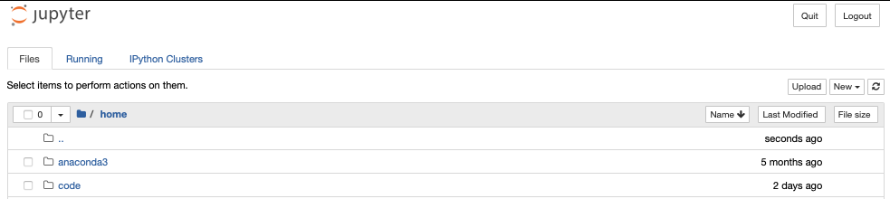

Launching jupyter Notebooks
These instructions will cover launching and connecting to jupyter notebooks on discovery. For launching jupyter notebooks on your laptop, the process is similar but instead of connecting to discovery you just execute: jupyter notebook.
jupyter notebooks are basically like any session of R or python, but you can organize code and save the code’s output. You can also use “markdown” which is a handy way of manipulating font and typesetting. If you’re ever curious about markdown you can google markdown cheatsheet, or there is this tutorial as well as this cheatsheat.
These instructions assume that you’ve completed Advanced SSH-ing as well as Installing Anaconda including creating the mvp_env anaconda environment.
1. Examples
Here is an example of what a notebook looks like. This notebook is running python, but there are many languages that can be run - I’ll show you how to use R in these notebooks when I’m in town. You can see the markdown (in black at the very top) and the code (in gray cells) and code output below each cell. Having code set up this way means you can go anywhere in the notebook and run code, then scroll up and run code, then scroll elsewhere and run code. Because of this, the order of execution is recorded to the left of the cell - eg In [1] or In [2].

Having code output saved alongside code is super super handy when going back to review or read code. Without the code output, you have to guess what the data looks like ‘behind the scenes’. With the code output you can leave yourself better clues as to what your code was doing. For example, previewing a data frame:
Or remembering which figure (filename) was created by which code:

2. Installing jupyter
To run jupyter, you need to have a version of python installed (even if you want to only use R). Anaconda environments are built on python, so they come with python as one of the default installs when you create even “blank” environments. The default python will likely be a recent version (>3.8) but you can also use jupyter on previous versions of python if you need to use another version.
Normally you have to install jupyter via python. Python packages are installed with something called pip. We already have jupyter in the mvp_env, so we don’t have to do this, but for future reference do (after activating the environment) : pip install jupyter
For now, let’s just activate our environment: conda activate mvp_env - afterwards, you should be able to get a path returned from doing which jupyter:
3. Launching jupyter
Running jupyter is pretty easy … except we installed jupyter on a remote server. Had we installed jupyter on our laptop, we would only need to run this command : jupyter notebook from terminal.
However, if we run that command that on the server, our computer doesn’t know where to plug in our monitor to “listen” to that jupyter broadcast so we can actually see the notebooks. So we need to tell our computer where to listen. The “where” is what’s called a “port”, and ports are identified by numbers - we’ll stick to four-digit numbers.
The default port that jupyter broadcasts on is port 8888. Because of this, it is likely that we cannot rely on port 8888 to be available on servers (since other people may be running notebooks or other things). So I want you to pick a number between 8888-9999 - but it can’t be 9603 because that’s what I use :slightly_smiling_face: - if you run into any errors below with the ssh command, try another number.
The way we tell our computer where to listen on the server takes place during a ssh command using “port forwarding”. Previously we just did ssh discovery. To have your computer listen on port 9603 do: ssh -L 9603:localhost:9603 discovery (remember to use your own port number).
This command tells your computer to forward the server’s port 9603 to your computer’s 9603. Honestly, it’s just easier to keep both numbers before and after :localhost: the same number. Once executed, this command will open a ssh connection to discovery and the port forwarding will happen silently (you won’t be able to tell). This window needs to remain open and connected in order for the “listening” to be maintained (if it’s closed, then you won’t be able to connect to your jupyter session).
When you’re doing this type of connection, you should make sure that you do not see the following message - this indicates that you aren’t able to “listen” on the port you want (ie it’s already in use) and you should pick another port. You will still connect to the server, so there is no “error” just the warning.

Since we’re not using the default port 8888, we also want jupyter to broadcast to the port we’re listening to (eg 9603). We want to launch the jupyter command in a new window (not our current “port forwarding” window) - so we’ll have two windows in total. But we also want to keep these two windows together, so while you have your “port forwarding” window open :
- go to iTerm’s menubar: Shell > Split Horizontally With Current Profile - this will (as you may expect) split the current window size to fit in another window. Note that the new window isn’t ssh-ed.
- in the new window do
ssh discoveryto connect. You will “land” on one of the login nodes - make sure you’re on the same login node as your other window (login-00orlogin-01) - the terminal prompt as well as the iTerm window itself will display your current node. If you’re not on the same node, you cansshfrom one node to the other: eg dossh login-00orssh login-01 - then activate mvp_env by doing
conda activate mvp_env - then launch jupyter by doing
jupyter notebook --no-browser --port 9603(using your port)
If you’ve installed iTerm for macOS and if you click on the top window with the jupyter command, and hold the ‘command’ key, you can scroll over the http:localhost link and it will become click-able. Click it, and you should see a file browser with the contents of your home directory.
If your browser says it can’t connect - double check to make sure your “listening” window didn’t have warnings about busy ports, and that you used the same port in the ssh -L command AND the jupyter launch command. If all else fails: close all of your windows, choose another port and redo the substeps above.

To actually launch a jupyter notebook, you click the New drop down menu and then python3. This should open a new browser tab with the notebook (with a default Untitled filename which you can edit either within the notebook or on the file browser page).

Note we don’t want to run jupyter on the login-node (this is where you “land” when you initially ssh) - in the how to launch and connect to a jupyter notebook on one of the compute nodes.
To stop your jupyter command you can do ‘control + c’ (and respond ‘y’ to confirm), or close the jupyter command window.
4. Launching and Connecting to jupyter Notebooks on Compute Nodes
When you initially ssh to discovery, you “land” on one of the two login nodes: either login-00 or login-01. You should see which one in your terminal prompt (see screenshots above). Running programs (including jupyter) on the login nodes (on any server) is usually “taboo” since resources are limited and all users will “land” here. So we want to use the compute nodes on discovery to actually run our notebook (which will run our code).
Terminal window arrangements
Before we do this, it will be useful to consider how our terminal windows will be arranged. In the following instructions we will have two ssh connections to discovery: - In the first window we will 1) connect to discovery via ssh discovery, 2) connect to the compute node, and 3) launch jupyter - In the second window we will connect to discovery using port forwarding described above (eg ssh -L 9603:localhost:9603 discovery).
Let’s first open two sessions to use, and combine them. - Using iTerm, hit ‘command + n’ to open a new window (or from the menu bar: Shell > New Window). This will be referred to as Window #1. - Next we’re going to split the window to add another pane (i.e., BASH session). To add a second pane in the same window - using the menu bar: Shell > Split Horizontally with Current Profile. This will be referred to as Window #2. - We put both of these sessions/panes in the same window so that we can eventually minimize it to the dock. We don’t ever want to close the jupyter notebook, nor do we want to close the port forwarding window that allows us to view the jupyter broadcast.
Connecting to compute nodes and launching jupyter
Window #1
First connect to discovery: ssh discovery.
Similar to how we launched jupyter on the login nodes, we will launch jupyter once connected to the compute nodes. To do so so that we can use jupyter, we need to launch an “interactive job”. The following command will request 1 CPU for 8 hours from the lotterhos partition (a partition where lab members get priority for computing resources).
srun -p lotterhos -N 1 --time=8:00:00 --pty /bin/bash
It may take some time to connect, and if the partition is busy it won’t connect until any currently running jobs are done. Ask Katie if you need clarification. If it’s taking too long you could try the “short” partition and use -p short instead of -p lotterhos. Once you’ve been granted resources, you should see a message like srun: job 33302314 has been allocated resources
Once connected, activate the anconda environment that has jupyter: eg conda activate mvp_env (note you could just add this line to the notebook.sh file below before the jupyter command)
Now that we’re connected, we actually need to run several lines of commands in Window #1 for everything to work properly. Instead of running these commands every time we want to connect to jupyter on a compute node, let’s put them all into a single file. - first let’s create a file in the source directory: vim ~/src/notebook.sh - if there’s an error, the source directory likely doesn’t exist, so create it: do mkdir ~/src - Using vim will open a file for editing. Once opened, paste the following text into the file. After pasting, hit esc then :wq (note :) then hit enter to save the file.
echo "launching on port $1"
ssh -N -f -R $1:localhost:$1 login-00
ssh -N -f -R $1:localhost:$1 login-01
cd $HOME/code
jupyter notebook --no-browser --port $1- The contents of the file at
~/src/notebook.shdo the following:- it will first print (
echo) the port we chose to use (see below for file usage) - then it will open a connection to each of the login nodes (
ssh -N ...) from the compute node (see instructions for Window #2 below). This is basically telling the compute node to broadcast the notebook at your port on each of the login nodes. - change to a folder where we save our notebooks
cd $HOME/code- note you may want to change this path, as it probably doesn’t exist in your directories - then launch jupyter using port we chose
- it will first print (
- Once the file at
~/src/notebook.shis saved we need to make it “executable” so we can eventually execute all of the lines within it at once whenever we want to launch jupyter. To do so do :chmod +x ~/src/notebook.sh- If you
ls ~/src/notebook.shthe file should now show up as green
- If you
- Now we can run this file like it was a program. To use this file we run something like:
~/src/notebook.sh 9603or if in thesrcdirectory:./notebook 9603- Note we added 9603 to the execution command. The “9603” is a “trailing argument” which is a common way to tell a program (BASH/shell, R, python, etc) to use a certain variable. In shell file, where ever you see
$1you can pretend as if it’s actually “9603”. - Executing the file should eventually bring up a link to connect, but first we need to tell our computer where to listen to the jupyter broadcast (see Window #2 instructions).
- Note we added 9603 to the execution command. The “9603” is a “trailing argument” which is a common way to tell a program (BASH/shell, R, python, etc) to use a certain variable. In shell file, where ever you see
Window #2
Since we have our jupyte broadcast being forwarded to each of the login nodes, it doesn’t matter which one we connect to. But we do need to tell our computer to listen for these broadcasts using the port number above (eg 9603). Simple execute the following in Window #2 ssh -L 9603:localhost:9603 discovery (using your port number). Now go back to Window #1, hold the ‘command’ key and click the http://localhost link. This should open up a file browswer as we saw when launching juypyter on the login node.
Combined windows
Your windows should look more or less like this:
5. Considerations with coding file systems
One thing to keep in mind - where ever you execute the jupyter notebook … command is where this ‘file browser’ will open. Some times this may not be ideal - eg if you save notebooks in a different directory other than home. So you could either create a symlink in your home directory so you can get to your notebooks faster or you can just launch the jupyter command from the notebooks directory. - on a mac, a symlink is called an alias and you can create aliases by right-clicking folders and files then drag the alias anywhere you want.
I recommend having all code for all projects under one directory (or at least having a single directory that symlinks all of your coding directories). This one directory can have multiple subdirectories with an arbitrary number of sub-subdirectories (so you don’t have to save all notebooks in a single directory).
For instance I have a directory for all code, then a subdirectory for my current work (MVP-offsets):
and sub-subdirectories within MVP-offsets: